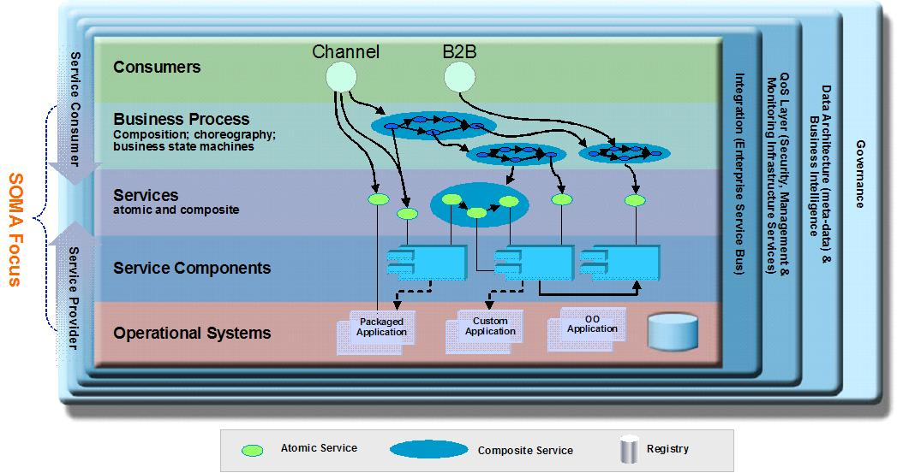
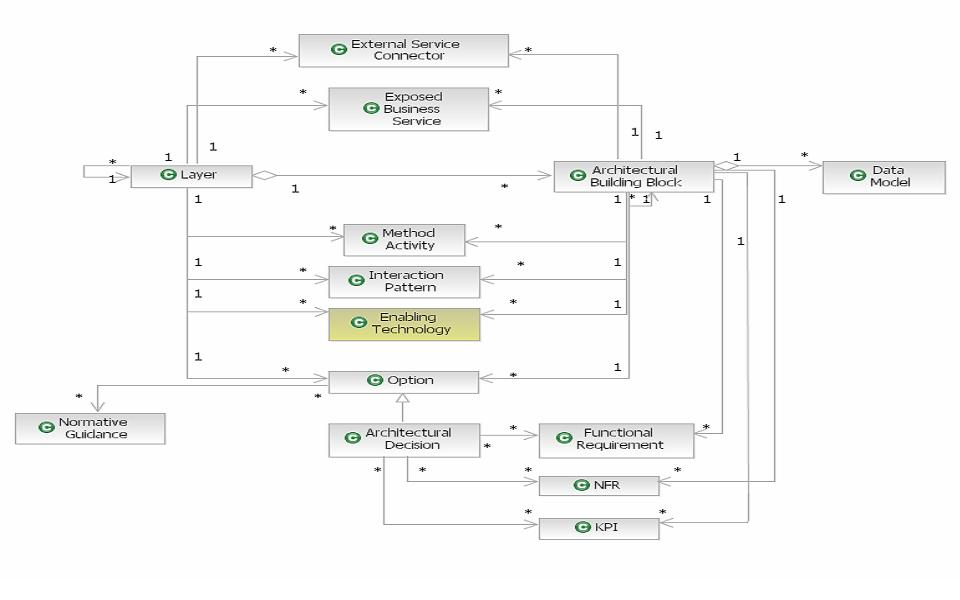

IBM SOA Reference Architecture:Solution View (aka IBM SOA Solution Stack) defines a blueprint to facilitate the
definition and instantiation of the architecture for various levels of scope: the ecosystem, an enterprise or a
specific solution. The IBM SOA Reference Architecture: Solution View supports different kind of architectural styles
including the SOA, object-oriented, component based architecture, event-driven, and message-driven styles. The maturity
of our clients will indicate the combination of required architecture styles. SOA Reference Architecture consists
of a set of layers that
-
Contain a set of attributes, responsibilities, and their associated rules.
-
Contain a set of architectural building blocks that reside in (or constitute) a layer and are
linked via a set of dependencies, associations and contracts
-
Capture the set of options available at each layer that capture the architectural
decisions which have to be made; that impact aspects of the layers. An architectural decision concerns
itself with the configuration and usage of architectural building blocks
-
Include the mechanisms necessary for interaction among the layers

IBM SOA Reference Architecture : Solution View (aka IBM SOA Solution Stack)

IBM SOA Reference Architecture : Solution View (aka IBM SOA Solution Stack) Meta Model
The SOA Reference Architecture Conceptual Model serves as a checklist of artifacts to “fill out” to create the
underlying architecture of a solution.
Details of SOA Solution Stack Conceptual Model are:
Layers: Represent the essential abstractions of a SOA that need to be built or addressed in a
SOA.
Options: For each layer, set of ABB what are the options available? Often these are represented as
solution-level patterns and aspects of an SOA that a solution architect should consider
Architectural Decisions: After weighing the options and considering the project context the architect
rationalizes a decision about a specific aspect of an SOA.
Normative Guidance: “What are the best-practices and patterns to use in executing this method
task?”
Method Activities: “How do I do this?”. Prescriptive guidance to a role (e.g., architect) on what
artifacts to produce by executing a set of tasks. activities include how to use ABBs to populate components in a
layer.
ABBs: Architectural Building Blocks (ABBs) are the underlying aspects of the solution that must be
taken into consideration when populating a layer. They reside in a layer and have attributes and constraints as well as
relationships and dependencies with other ABBs in the same layer or different layers.
Interaction Patterns: Describe how layers and ABB’s within them typically interact. Represents an
abstraction of the various relationships among ABBs (patterns and diagrams) within and across layers.
KPIs: Key performance indicators affect the selection and configuration of ABBs and relate to the
measure of what outcomes we need by making architectural decisions
NFRs: Non-functional requirements enforce constraints on ABB’s by making a set of architectural
decisions to enforce a set of KPI’s.
Enabling Technologies: “How do I actually realize the ABB’s I have chosen?” What technologies and
their configurations do I use to achieve the NFR’s and enforce KPI’s
a technical realization of ABBs in a specific layer is effected by making a selection of technologies and
products.
Exposed (Business) Services: SOMA helps define services (and components, flow, information and
policies). Allocate services to layers in Which layer will expose a service and what ABB’s will be involved in its
realization? They often expose business processes or composite services They can be reused as service
assets.
External Service Connectors: External service connectors refer to adaptors (e.g., transformers) for
exploiting external services for business connections and business integrations.
Data Models: A Model of Data contents associated with relevant ABBs including data exchange between
layers and external services.
Functional Requirements: Describe the desired externally visible functionality of the service or
system broken down by the the functional requirements that one layer or ABB must fulfill.
|